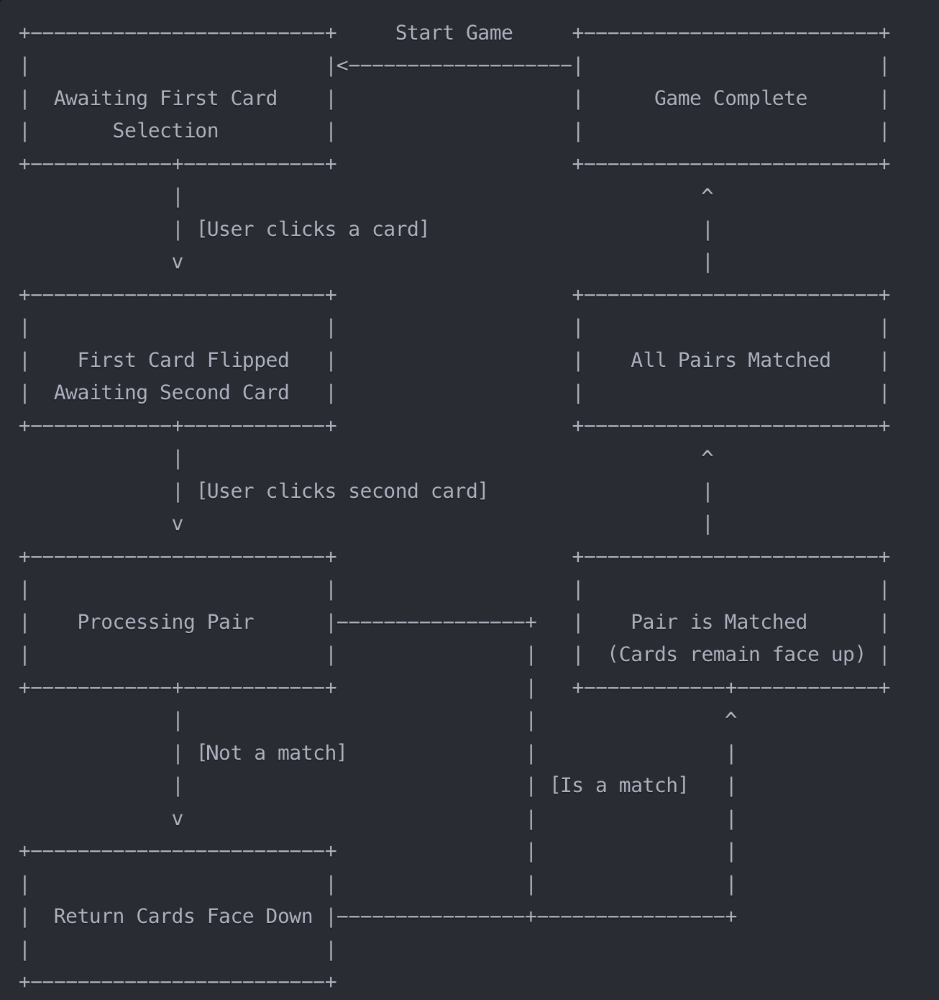

Learn how to track and manage state in your Pokémon Memory Game using practical techniques suitable for JavaScript beginners.
Game state refers to all the information that describes the current condition of your game at any given moment. For our memory game, this includes:
Properly managing this state is crucial for creating a game that responds correctly to player actions and maintains consistent behavior.
As your game grows in complexity, keeping track of all these different states becomes challenging. Poor state management can lead to:
By implementing a structured approach to state management, you'll create a more robust game that's easier to extend and debug.
Let's start with the simplest approach to tracking state in our memory game. For beginners, using simple variables to track state is a good place to start.
// Track which cards are currently selected
let firstSelectedCard = null;
let secondSelectedCard = null;
// Track whether we're processing a pair (to prevent clicking more cards)
let isProcessingPair = false;
// Track game progress
let matchedPairsCount = 0;
const totalPairs = 6;These simple variables allow us to keep track of the essential state needed for a basic memory game. Let's examine how we'd use them:
function handleCardClick(event) {
// Find the clicked card
const card = event.target.closest('.card');
// Return early if:
// - Not a card
// - Card is already flipped or matched
// - We're currently processing a pair
if (!card ||
card.classList.contains('flipped') ||
card.classList.contains('matched') ||
isProcessingPair) {
return;
}
// Flip the card
card.classList.add('flipped');
// First card selection
if (firstSelectedCard === null) {
firstSelectedCard = card;
return;
}
// Second card selection
secondSelectedCard = card;
// Lock interaction during processing
isProcessingPair = true;
// Check for a match
checkForMatch();
}This simple approach works for a basic memory game, but as your game grows more complex, you might run into limitations.
A memory game follows a specific flow of states. Understanding this flow helps us organize our code better:
In our memory game, we need to track several card states:
| State | Description | Visual Indicator |
|---|---|---|
| Unflipped | Initial state, card is face down | Pokéball image showing |
| Flipped | Card is face up but not yet matched | Pokémon showing, card has 'flipped' class |
| Matched | Card has been matched with its pair | Pokémon showing, card has 'matched' class |
We also need to track the overall game state:
| Game State | Description |
|---|---|
| Awaiting First Selection | No cards selected yet |
| Awaiting Second Selection | First card selected, waiting for second |
| Processing Pair | Two cards selected, checking match |
| Game Complete | All pairs have been matched |
Now let's see how to use our state variables to control the game flow:
function checkForMatch() {
// Get Pokémon data from both cards
const firstPokemonData = JSON.parse(firstSelectedCard.dataset.pokemon);
const secondPokemonData = JSON.parse(secondSelectedCard.dataset.pokemon);
// Compare Pokémon IDs to determine if it's a match
if (firstPokemonData.id === secondPokemonData.id) {
// Handle match
handleMatch();
} else {
// Handle non-match
handleNonMatch();
}
}
function handleMatch() {
// Mark cards as matched
firstSelectedCard.classList.add('matched');
secondSelectedCard.classList.add('matched');
// Increment match counter
matchedPairsCount++;
// Check if game is complete
if (matchedPairsCount === totalPairs) {
setTimeout(showGameComplete, 500);
}
// Reset selection for next turn
resetSelection();
}
function handleNonMatch() {
// Flip cards back after a delay
setTimeout(() => {
firstSelectedCard.classList.remove('flipped');
secondSelectedCard.classList.remove('flipped');
// Reset selection for next turn
resetSelection();
}, 1000);
}
function resetSelection() {
// Reset selection variables
firstSelectedCard = null;
secondSelectedCard = null;
isProcessingPair = false;
}This approach to state management is straightforward and works well for simple games. The key concepts here are:
A common mistake in memory games is allowing players to click more cards while animations are still running. Always lock interaction during animations.
// At the beginning of handleCardClick
if (isProcessingPair) {
return; // Exit early if we're processing a pair
}
// Before starting any animation
isProcessingPair = true;
// After animation completes
isProcessingPair = false;As your game grows, you might want a more structured approach to state management. Here's an improved version using an object to group related state:
// Game state object
const gameState = {
// Card selection
firstCard: null,
secondCard: null,
// Game flow control
isProcessingPair: false,
// Game progress
matchedPairs: 0,
totalPairs: 6,
// Reset selection for next turn
resetSelection: function() {
this.firstCard = null;
this.secondCard = null;
this.isProcessingPair = false;
},
// Check if game is complete
isGameComplete: function() {
return this.matchedPairs === this.totalPairs;
}
};
// Usage in handleCardClick
function handleCardClick(event) {
// ...existing code...
// First card selection
if (gameState.firstCard === null) {
gameState.firstCard = card;
return;
}
// Second card selection
gameState.secondCard = card;
// Lock interaction
gameState.isProcessingPair = true;
// Check for match
checkForMatch();
}This approach offers several advantages:
Now it's your turn to implement basic state management in the Pokémon memory game. Follow these steps:
Tip: Start simple! Get the basic state tracking working before adding animations or advanced features.
Once you're comfortable with basic state management, you can explore more advanced approaches:
These advanced topics will be covered in future tutorials as we continue to improve our memory game.